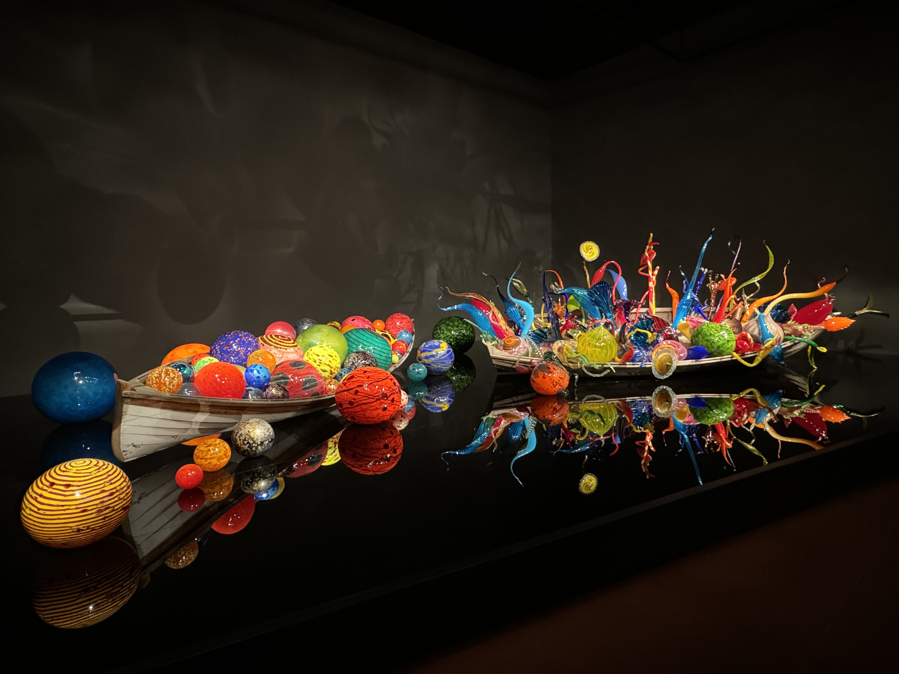

A future-oriented autonomous delivery system integrating self-driving technology and drone logistics.
View Case Study
Comprehensive diabetes management system for kids, combining hardware and software for seamless tracking.
View Case Study
An immersive interactive installation blending physical and digital environments to explore nature.
View Case Study
Creative research and exploration on how to use metaphor-driven design to visualize digital vulnerability.
View Case Study
A music app designed to help users enjoy music in multiple scenes freely and conveniently.
View Case Study
A creative exploration of data protection through visualization, examining how our vulnerable data can be conceptually protected.
View Case Study
A financial education and investment platform with a user-friendly interface designed to simplify complex financial concepts.
View Case Study
A responsive installation exploring the relationship between sound, space, and human interaction.
View Case StudyOpen for collaboration & dialogue.
lionheartchuuu@gmail.com